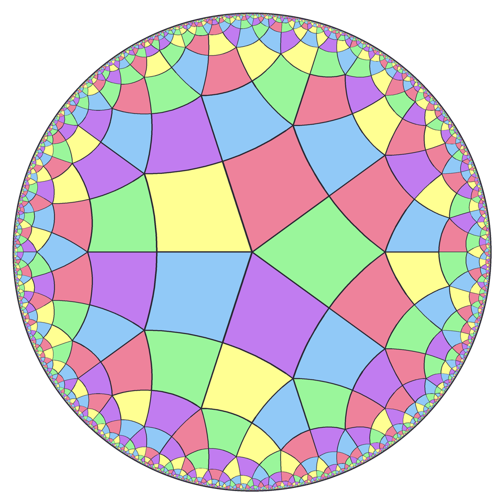
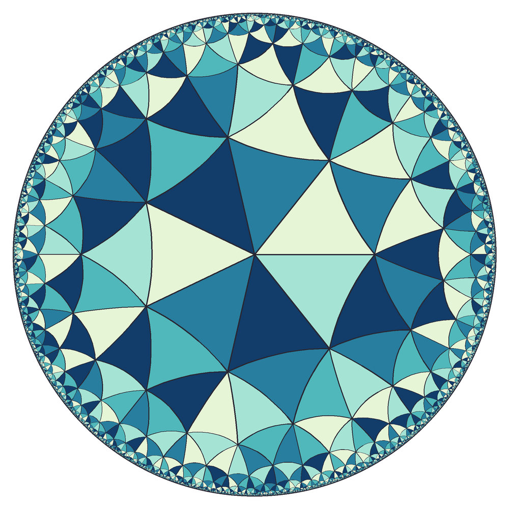
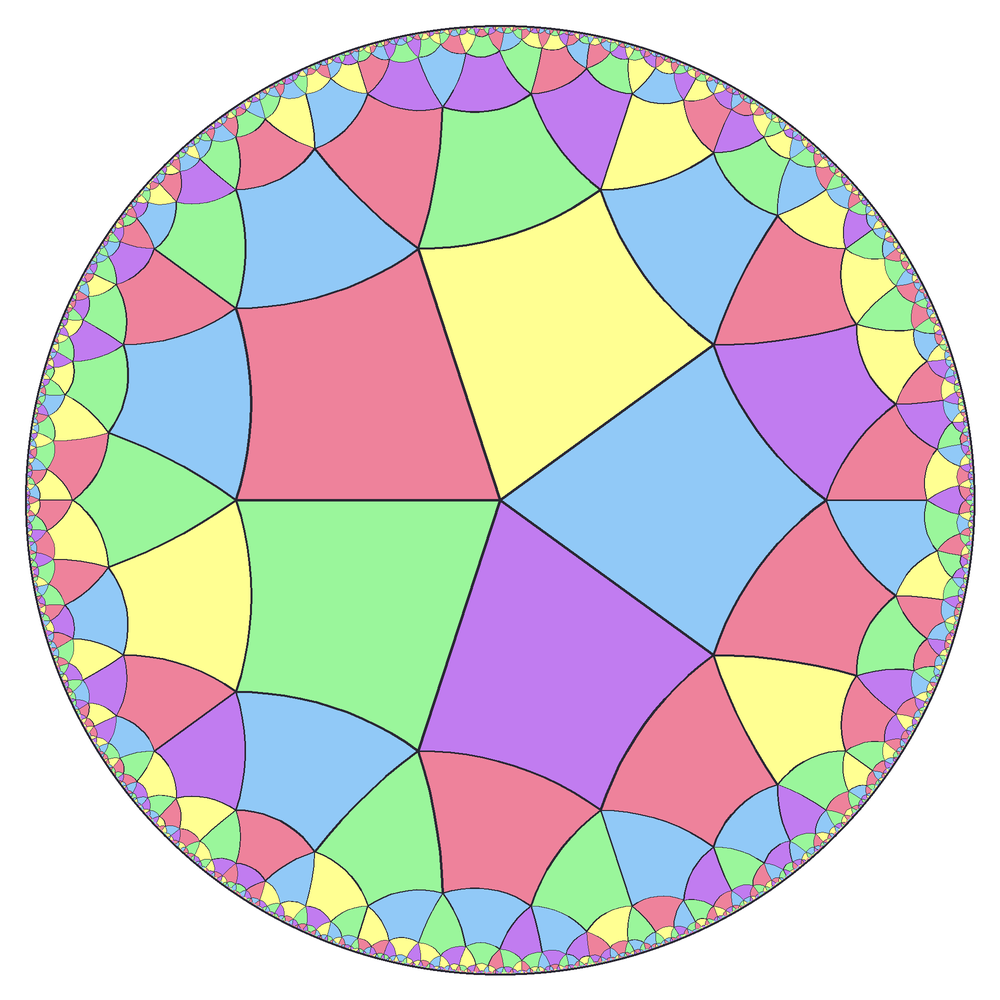
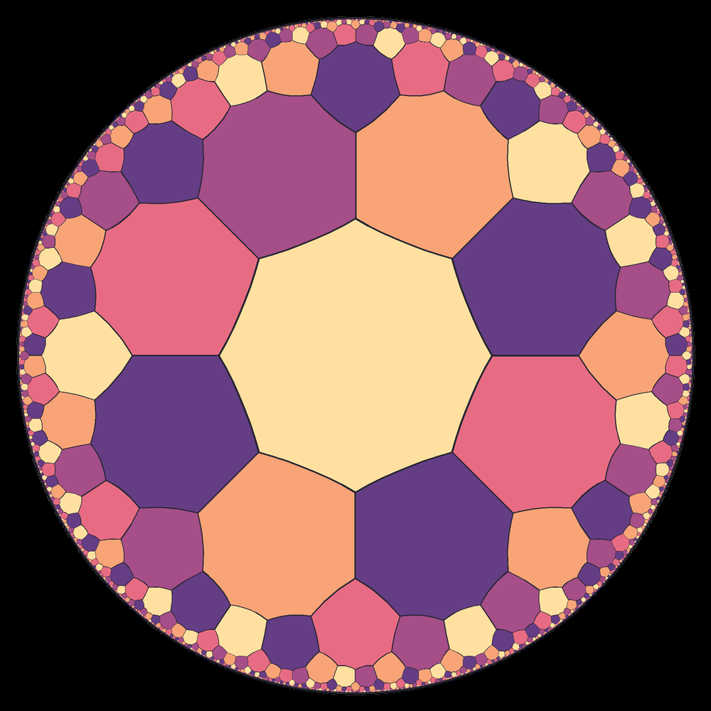

In February 2023 I wrote a program to draw tilings like this one. The tiles look like they shrink toward the edge, but in the geometry they live in they’re all the same size. They tile the hyperbolic plane, and the disk is a map of it. It’s a Python program that builds them from a single polygon and draws them as SVG or PNG, with a small desktop interface for picking the tiling, colours and size.
A regular tiling \(\{p, q\}\) has \(p\)-sided polygons with \(q\) of them meeting at every corner, so each corner angle is \(2\pi/q\). On a flat plane a regular \(p\)-gon has corner angles of \((p-2)\pi/p\), and the two only agree when
\[ (p - 2)(q - 2) = 4, \]which gives squares, triangles and hexagons. In the hyperbolic plane, polygons have smaller angles than flat ones with the same number of sides, so they can fit more of them around a corner. That gives the condition
\[ (p - 2)(q - 2) > 4, \]and infinitely many tilings: \(\{5,4\}\), \(\{4,5\}\), \(\{3,7\}\), \(\{8,3\}\) and so on.
The program draws everything in the Poincaré disk, the unit disk with the metric
\[ ds = \frac{2\,|dz|}{1 - |z|^2}. \]Distances blow up near the edge, which is why equal tiles look smaller there. Straight lines in this geometry are diameters and circular arcs that meet the edge of the disk at right angles. The outlines get thinner toward the edge too, scaled with \(\sqrt{1 - |z|^2}\).
The first polygon sits at the centre. For a regular \(\{p,q\}\) polygon, the hyperbolic distance \(R\) from its centre to a corner satisfies \(\cosh R = \cot(\pi/p)\cot(\pi/q)\), and in the disk that corner sits at radius \(r = \tanh(R/2)\). Working that through gives
\[ r = \sqrt{\frac{\cos(\pi/p + \pi/q)}{\cos(\pi/p - \pi/q)}}. \]Every other tile is a reflection of the first one. To reflect a point \(z\) across the edge from corner \(a\) to corner \(b\), the program moves \(a\) to the centre of the disk with the Möbius transformation
\[ T_a(z) = \frac{z - a}{1 - \bar a z}, \]which maps the disk to itself and keeps hyperbolic distances. That turns the edge into a straight diameter, so the reflection is just a complex conjugate rotated into line with \(T_a(b)\):
\[ w = \overline{T_a(z)}\,\frac{T_a(b)}{\overline{T_a(b)}}, \qquad z' = T_a^{-1}(w) = \frac{w + a}{1 + \bar a w}. \]This is steadier than inverting through each edge’s circle directly, because edges near the centre are almost straight and their circles have huge radii.
The tiling grows outward, breadth first. Each tile is reflected across each of its edges. A spatial hash on tile centres catches a reflection that lands on a tile that already exists, and the two shared corners are copied exactly so edges don’t drift apart. Growth stops once tile centres get within a pixel of the edge of the disk. Past that point the tiles are smaller than a pixel, and there are infinitely many of them.
The pastel design at the top starts from \(\{5,5\}\): five pentagons at every corner. Each pentagon is split into five kites by joining its centre to the hyperbolic midpoints of its edges, so every kite has corners of 72° and 90° in turn. The colours come from a seeded greedy pass that gives each tile the colour its already-coloured neighbours use least, so the same seed always gives the same picture.



SVG output keeps every edge as an exact circular arc and needs only Python’s standard library. PNG output and the desktop preview use Pillow. The tests check the geometry itself: that reflections keep side lengths and angles, that every edge meets the edge of the disk at right angles, that shared edges line up, and that the right number of tiles meet at each corner.